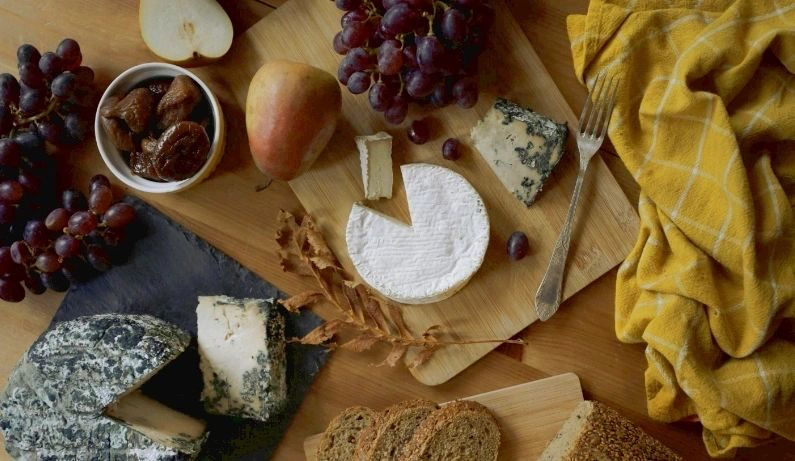

A book by Anderson Santos
The Science and Practice of Vegan Cheese
Written to help you understand what a real vegan cheese is actually made of — the cultures, the fermentation, the technique.

Vegan cheese for everyone
This book was written to help you to understand what a real vegan cheese is made of. There are more things to be learned, and I am working on those too.
It covers the cultures, the fermentation and the practical technique behind cheeses made without dairy — not substitutes, but cheeses in their own right.
Also
- Cultures Vegan cheese cultures, shipped within Europe from Italy VegHu
- Workshop Online workshop — a new one is being prepared Soon